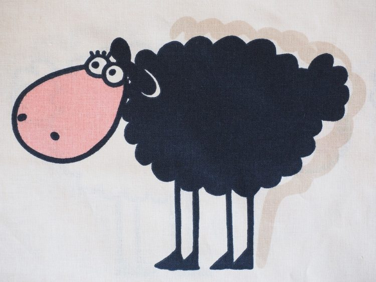
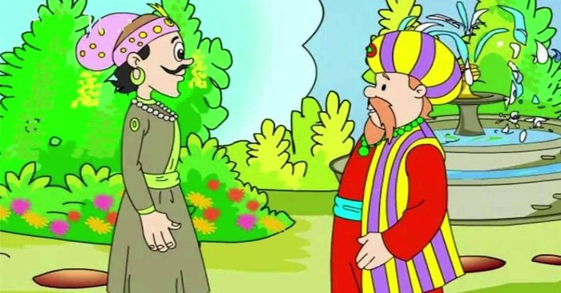

Học CSS
Những mẫu truyện dùng CSS.
Câu chuyện con cừu đen kêu be be

Ngày xửa ngày xưa, có một con cừu đen sống trong một ngôi nhà nhỏ. Cứ đến mùa xuân, con cừu đen lại tự cạo sạch lông của mình và đem ra chợ bán cho những người muốn làm quần áo ấm.
Một năm nọ, con cừu đen nhận thấy rằng dường như không ai còn chuộng lông cừu đen nữa. Do đó, số lông cừu mà nó còn lại khá nhiều. Dù vậy, nó không muốn lãng phí số lông này nên đã quyết tâm bán tiếp. Hôm đó, chẳng có ai muốn mua lông của nó cả nên con cừu đen mang số lông ấy về nhà. Ngày hôm sau, nó lại mang ra bán tiếp nhưng mọi chuyện cứ diễn ra y như hôm trước. Và hôm sau, hôm sau nữa cũng y như vậy.
Một ngày nọ, khi con cừu đen đang ngồi buồn rầu với số lông của mình, có một cậu bé chạy lại và hỏi nó có bán số lông này không. Nghe hỏi, con cừu đen vô cùng mừng rỡ và nói có. Cậu bé chạy đến chỗ bố mẹ mình thông báo có chỗ bán lông cừu. Họ cùng nhau đến chỗ con cừu và ngỏ ý muốn mua hết toàn bộ số lông. Họ cho biết mình đến từ ngôi làng kế bên và đã tìm kiếm rất nhiều nơi để tìm mua lông cừu đen nhưng không có chỗ nào bán cả.
Ngày hôm ấy, con cừu trở về nhà và cảm thấy vô cùng hạnh phúc khi những cố gắng của nó đã được đền đáp xứng đáng.
Ý nghĩa của câu chuyện: Hãy cố gắng, kiên trì và không bao giờ bỏ cuộc, có ngày con sẽ thành công.
Truyện ngắn con cú khôn ngoan
Ngày xửa ngày xưa, có một con cú già sống trên một cây sồi to. Mỗi ngày, nó đều phóng tầm mắt ra thật xa để quan sát những điều xảy ra xung quanh mình. Có khi nó nhìn thấy một cậu bé đang giúp ông lão xách một cái túi to, có khi nó nhìn thấy một cô con gái đang cằn nhằn mẹ mình. Ngày qua ngày, con cú nhìn thấy được rất nhiều thứ nhưng nó vẫn giữ im lặng về những điều mà mình thấy.
Từ từ, con cú già bắt đầu nói ít hơn và thính giác của nó dần trở nên tốt hơn. Bây giờ nó có thể nghe rõ những cuộc nói chuyện của mọi người. Một ngày, con cú già nghe thấy một người phụ nữ nói với ai đó rằng có một con voi nhảy qua hàng rào. Một ngày khác, con cú lại nghe thấy một người đàn ông nói với ai đó rằng mình là con người hoàn hảo và chưa bao giờ mắc phải sai lầm gì.
Mỗi ngày trôi qua, con cú già lại nói ít hơn và nghe nhiều hơn. Nhờ vậy, nó biết được tất cả mọi thứ xảy ra xung quanh, dù không có ở đó. Dần dần, con cú già trở nên khôn ngoan hơn và nổi tiếng vì sự khôn ngoan ấy.
Ý nghĩa của câu chuyện: Nói ít, quan sát và lắng nghe nhiều sẽ giúp con trở nên thông minh và khôn ngoan hơn.
Câu truyện một cách đếm thông minh

Ngày nọ, hoàng đế Akbar đã hỏi các quan cận thần của mình một câu hỏi lạ khiến mọi người vô cùng ngạc nhiên.
Không ai biết phải trả lời như thế nào cho đức vua cả. Ngay lúc đó, Birbal, một vị quan được xem là người
thông minh nhất ở đất nước này, bước vào và hỏi các quan tại sao trông họ lại lo lắng vậy. Các quan kể lại
với ông rằng, hoàng đế đã hỏi một câu hỏi mà không ai biết trả lời thế nào cả. Đó là: “Có bao nhiêu con quạ
trong thành?”.
Sau khi nghe xong, ông nở một nụ cười và trả lời: “Thưa bệ hạ, thần biết câu trả lời. Có 50.589 con quạ
trong thành”. Mọi người sửng sốt trước câu trả lời đó, kể cả hoàng đế nên vua đã hỏi lại ông: “Tại sao ngươi
lại chắc chắn như vậy?”.
Birbal thưa: “Thưa bệ hạ, xin hãy sai một tên lính ngồi đếm số quạ trong thành. Nếu có nhiều hơn số quạ mà
thần nói, điều đó có nghĩa là họ hàng của chúng ở nơi khác đến thăm. Nếu có ít hơn thì có nghĩa là một số
con đã đi thăm họ hàng của chúng ở nơi khác”. Hoàng đế Akbar cảm thấy rất hài lòng với câu trả lời dí dỏm
của Birbal.
Ý nghĩa của câu chuyện: Khi nói ra một điều gì đó, con phải có cách lý giải rõ ràng tại sao con nói như
vậy.
Cảm ơn tất cả mọi người đã đọc bài viết - 2022.